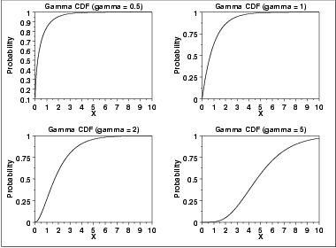
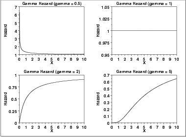
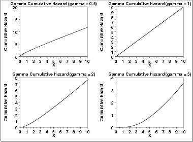
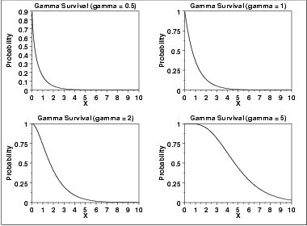
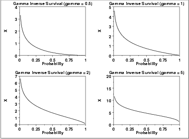

1.3. EDA Techniques
1.3.6. Probability Distributions
1.3.6.6. Gallery of Distributions
1.3.6.6.11. |
Gamma Distribution |
\( f(x) = \frac{(\frac{x-\mu}{\beta})^{\gamma - 1}\exp{(-\frac{x-\mu} {\beta}})} {\beta\Gamma(\gamma)} \hspace{.2in} x \ge \mu; \gamma, \beta > 0 \)
where γ is the shape parameter, μ is the location parameter, β is the scale parameter, and Γ is the gamma function which has the formula
\( \Gamma(a) = \int_{0}^{\infty} {t^{a-1}e^{-t}dt} \)
The case where μ = 0 and β = 1 is called the standard gamma distribution. The equation for the standard gamma distribution reduces to
\( f(x) = \frac{x^{\gamma - 1}e^{-x}} {\Gamma(\gamma)} \hspace{.2in} x \ge 0; \gamma > 0 \)
Since the general form of probability functions can be expressed in terms of the standard distribution, all subsequent formulas in this section are given for the standard form of the function.
The following is the plot of the gamma probability density function.

\( F(x) = \frac{\Gamma_{x}(\gamma)} {\Gamma(\gamma)} \hspace{.2in} x \ge 0; \gamma > 0 \)
where Γ is the gamma function defined above and \(\Gamma_{x}(a)\) is the incomplete gamma function. The incomplete gamma function has the formula
\( \Gamma_{x}(a) = \int_{0}^{x} {t^{a-1}e^{-t}dt} \)
The following is the plot of the gamma cumulative distribution function with the same values of γ as the pdf plots above.

The following is the plot of the gamma percent point function with the same values of γ as the pdf plots above.

\( h(x) = \frac{x^{\gamma - 1}e^{-x}} {\Gamma(\gamma) - \Gamma_{x}(\gamma)} \hspace{.2in} x \ge 0; \gamma > 0 \)
The following is the plot of the gamma hazard function with the same values of γ as the pdf plots above.

\( H(x) = -\log{(1 - \frac{\Gamma_{x}(\gamma)} {\Gamma(\gamma)})} \hspace{.2in} x \ge 0; \gamma > 0 \)
where Γ is the gamma function defined above and \(\Gamma_{x}(a)\) is the incomplete gamma function defined above.
The following is the plot of the gamma cumulative hazard function with the same values of γ as the pdf plots above.

\( S(x) = 1 - \frac{\Gamma_{x}(\gamma)} {\Gamma(\gamma)} \hspace{.2in} x \ge 0; \gamma > 0 \)
where Γ is the gamma function defined above and \(\Gamma_{x}(a)\) is the incomplete gamma function defined above.
The following is the plot of the gamma survival function with the same values of γ as the pdf plots above.

The following is the plot of the gamma inverse survival function with the same values of γ as the pdf plots above.

| Mean | γ |
| Mode | γ- 1 γ ≥ 1 |
| Range | 0 to \(\infty\). |
| Standard Deviation | \( \sqrt{\gamma} \) |
| Skewness | \( \frac{2} {\sqrt{\gamma}} \) |
| Kurtosis | \( 3 + \frac{6} {\gamma} \) |
| Coefficient of Variation | \( \frac{1} {\sqrt{\gamma}} \) |
\( \hat{\gamma} = (\frac{\bar{x}} {s})^{2} \)
\( \hat{\beta} = \frac{s^{2}} {\bar{x}} \)
where \(\bar{x}\) and s are the sample mean and standard deviation, respectively.
The maximum likelihood estimates for the 2-parameter gamma distribution are the solutions of the following simultaneous equations
\( \hat{\beta} - \frac{\bar{x}}{\hat{\gamma}} = 0 \)
\( \log{\hat{\gamma}} - \psi(\hat{\gamma}) - \log \left( \frac{\bar{x}} { \left( \prod_{i=1}^{n}{x_i} \right) ^{1/n} } \right) = 0 \)
with ψ denoting the digamma function. These equations need to be solved numerically; this is typically accomplished by using statistical software packages.